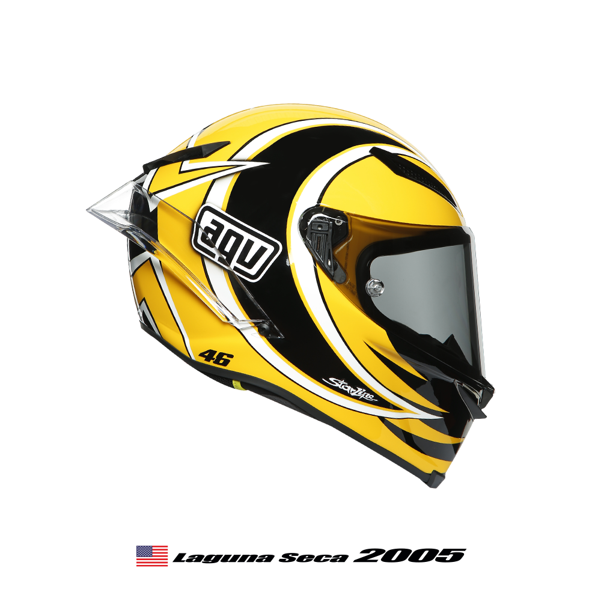
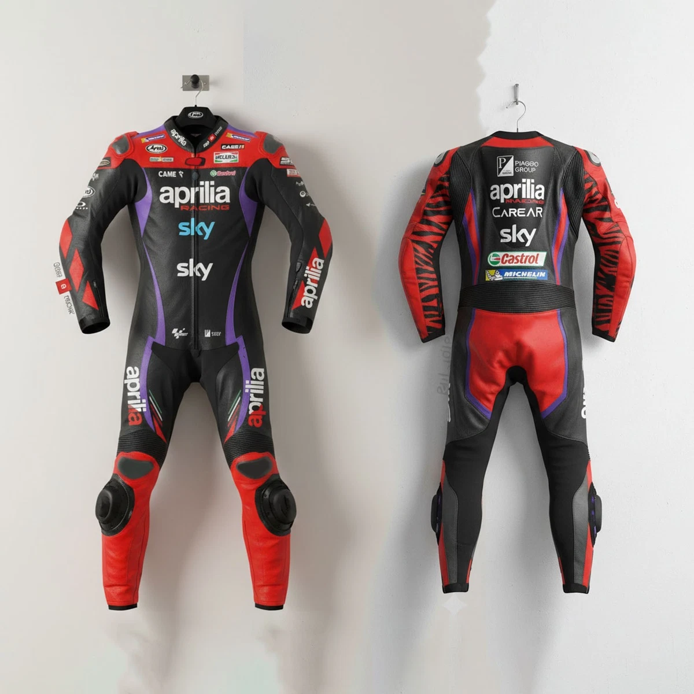
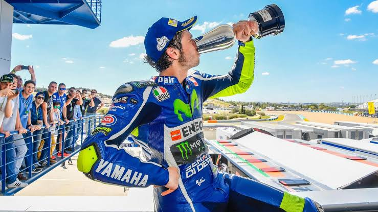

Museo
MotoGP
Inicio
Exposiciones
Horario
Entradas
Ubicación
Contacto
Galería: Campeones del mundo
Piezas que acompañaron a los pilotos en la pista.

Casco de carreras AGV con diseño amarillo, hecho a la medida del piloto.

Traje de piel de la marca italiana aprilia con protecciones en hombros, codos y espalda.

Valentino Rossi, uno de los mejores corredores de MotoGP, sosteniendo su Trofeo
Máquinas de leyenda
Volver a exposiciones
Tecnología en pista